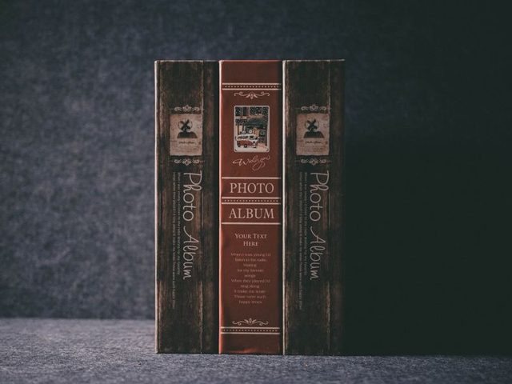
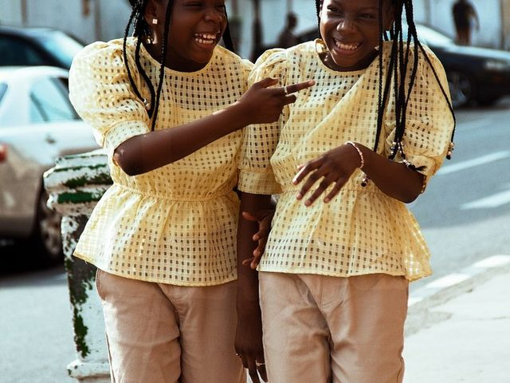
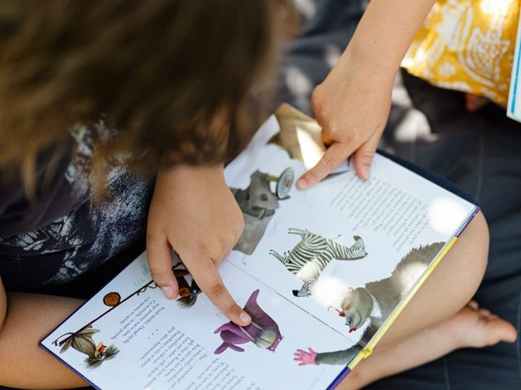
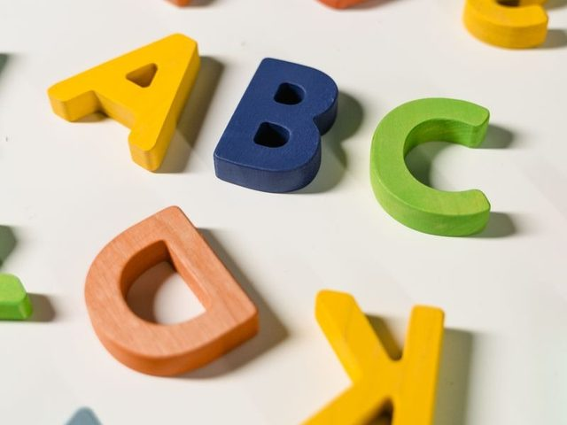
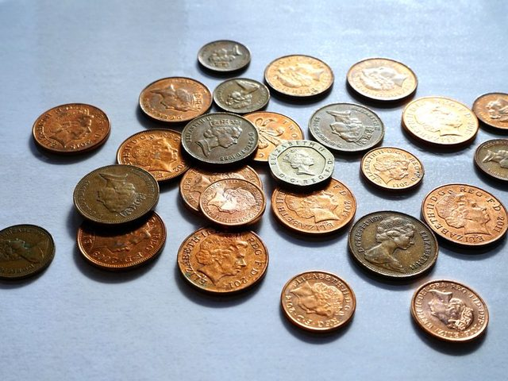
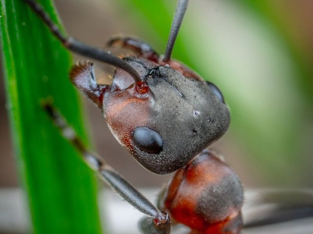

VOCABULARY · WORD UP 單字複習 UNIT 2
A-II．A 開頭（二）
WORD UP「A-II」的 38 個字（air 到 apologize）。紅色＝要複習，藍色標籤＝WORD UP 標熟記、還要在這裡考對。
共 38 個單字．點 🔊 聽發音
1airn.
空氣
不可數
The air in the mountains is fresh.山上的空氣很新鮮。
2aircraftn.
飛機；航空器
單複數同形
The aircraft landed safely.那架飛機安全降落了。
3airlinen.
航空公司
Which airline are you flying with?你搭哪一家航空公司？
4airplanen.
飛機
= plane
We took an airplane to Japan.我們搭飛機去日本。
5airportn.
機場
Dad picked us up at the airport.爸爸到機場接我們。
6alarmn.
鬧鐘；警報
alarm clock 鬧鐘
My alarm rings at six every morning.我的鬧鐘每天早上六點響。

7albumn.
相簿；專輯
photo album 相簿
Grandma showed us her old photo album.奶奶給我們看她的舊相簿。

8alikeadj.
相像的
放在 be 動詞後面
The twins look alike.那對雙胞胎長得很像。
9aliveadj.
活著的
放在 be 動詞後面
The fish is still alive.那條魚還活著。

10alladj./pron.
全部的；全部
all of us 我們全部
All the students are here.所有學生都到了。
11allowv.
允許
allow + 人 + to V
My parents allow me to play games on weekends.爸媽允許我週末玩遊戲。
12almostadv.
幾乎；差不多
It is almost ten o'clock.快十點了。
13aloneadj./adv.
單獨的；獨自
Don't walk home alone at night.晚上不要一個人走路回家。
14alongprep.
沿著
walk along the river
We walked along the beach.我們沿著海灘散步。

15aloudadv.
大聲地；出聲地
read aloud 唸出來
Please read the story aloud.請把故事唸出來。

16alphabetn.
字母表
There are 26 letters in the English alphabet.英文字母有 26 個。
17alreadyadv.
已經
I have already finished my homework.我已經寫完功課了。
18alsoadv.
也
放在一般動詞前、be 動詞後
I like dogs. I also like cats.我喜歡狗，也喜歡貓。
19altogetheradv.
總共；完全
There are thirty students altogether.總共有三十個學生。
20alwaysadv.
總是
頻率最高
She always gets up early.她總是很早起床。
21amv.
是（I 的 be 動詞）
I am
I am a junior high school student.我是國中生。
22ambulancen.
救護車
Call an ambulance! Someone is hurt.快叫救護車！有人受傷了。
23American.
美國；美洲
My uncle lives in America.我叔叔住在美國。
24Americanadj./n.
美國的；美國人
Our new teacher is American.我們的新老師是美國人。

25amountn.
數量；金額
a large amount of + 不可數名詞
Drink a large amount of water every day.每天要喝大量的水。
26ancientadj.
古代的；古老的
We visited an ancient temple.我們參觀了一座古老的廟。
27angeln.
天使
The little girl sings like an angel.那個小女孩唱歌像天使一樣。
28angern.
憤怒
angry 的名詞
He could not hide his anger.他藏不住怒氣。
29angryadj.
生氣的
be angry with + 人
Mom is angry with me.媽媽在生我的氣。
30animaln.
動物
The panda is my favorite animal.貓熊是我最喜歡的動物。
31anklen.
腳踝
I hurt my ankle in PE class.我在體育課扭傷腳踝。
32anotheradj./pron.
另一個；再一個
後面接單數名詞
Can I have another cookie?我可以再吃一塊餅乾嗎？
33answern./v.
答案；回答
Do you know the answer?你知道答案嗎？

34antn.
螞蟻
An ant is very small but strong.螞蟻很小但很有力氣。
35anyadj./pron.
任何；一些
用在否定句和問句
Do you have any questions?你有任何問題嗎？
36anywayadv.
無論如何；反正
It was raining, but we went out anyway.雖然在下雨，我們還是出門了。
37apartmentn.
公寓
We live in an apartment on the fifth floor.我們住在五樓的公寓。
38apologizev.
道歉
apologize to + 人 + for + 事
He apologized to me for being late.他因為遲到向我道歉。
FOCUS
容易搞混的字
| 字 | 用法 | 例子 |
|---|---|---|
| alone / lonely | 獨自（事實）／寂寞（感覺） | live alone ／ feel lonely |
| alike / like | 相像的（放句尾）／像（後面接名詞） | They look alike. ／ He looks like his dad. |
| aloud / loud | 出聲地 ／ 大聲的 | read aloud ／ loud music |
| anger / angry | 名詞 ／ 形容詞 | show his anger ／ be angry |
| already / all ready | 已經 ／ 全都準備好 | I have already eaten. ／ We are all ready. |
FOCUS
頻率副詞與片語
| 說法 | 中文 |
|---|---|
| always | 總是（100%） |
| almost | 幾乎 |
| allow + 人 + to V | 允許某人做… |
| apologize to + 人 + for + 事 | 為某事向某人道歉 |
| be angry with + 人 | 生某人的氣 |
always 這類頻率副詞放在一般動詞前、be 動詞後。